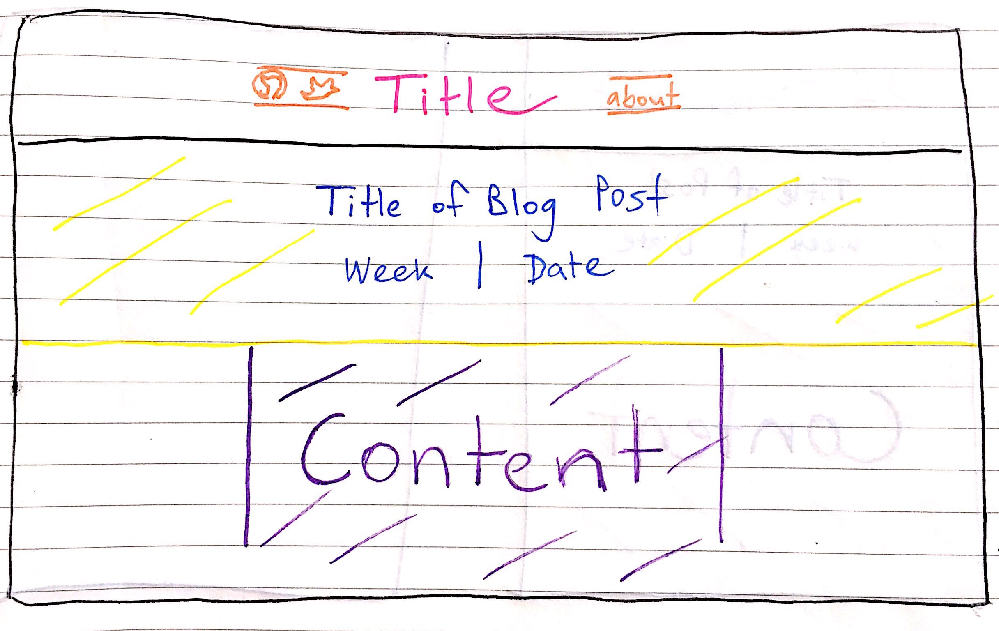

A responsive website is one that looks good and fits on every size of screen. Browser windows on smartphones, tablets and desktops all differ in size, so it's important to make websites responsive so that they can adapt and take advantage of the space available. This might mean increasing the font or margin sizes as the size of a browser increases, or adding extra functionality to the desktop-sized version of a site.
Smartphones are everywhere and people are searching online while they're out and about, so making sure a webpage works well on small screens is important if you want to attract more users. 'Mobile first' design is the idea that it's easier to start off small, designing a site to fit a mobile browser and making sure all the core content is easily accessible at the touch of a button (rather than the click of a mouse), before moving on to bigger and more complex desktop-friendly designs.
With responsive web design comes the challenge writing code for a range of different browser-sizing scenarios. At what point should the layout condense to fit the screen? What size font would look best on a mobile compared to a laptop? This is where frameworks come in. A framework is like a construction kitset - most of the core pieces of code are supplied; you just have to arrange the pieces to put the website together.
Frameworks make web development easier, because having access to all that ready-made code means you don't have to write everything from scratch. At the same time, they cut down the time it takes to whip up a website. Another bonus - most popular frameworks are free.
There are some downsides though, particularly for beginners. For starters, if you use frameworks all the time, you'll learn a lot about how to use them, but you won't build on your skills in the same way as if you used a language to build everything yourself. Frameworks can also be inflexible. You can't modify a framework's core behaviour, so there are limits to what you can do depending on which framework you choose.
The range of frameworks available is pretty impressive (there's a helpful list here). So far I've tried using Skeleton, which is a very lightweight framework built with mobile in mind, but I've also heard great things about Bootstrap.
A wireframe is basic visual representation of how elements will be arranged on a website. Similar to creating blueprints for a building project, wireframing allows designers to communicate the planned layout of a webpage and the hierarchy of information on each page. Wireframes can be created using web tools such as Mockflow or Mockingbird, or simply drawn using pen and paper (like I've done below). I've also come across this browser tool Wirify that enables users to see a wireframe version of any live site - seems helpful for getting inspiration!
For me, one of the hardest parts of wireframing has been not spending too long perfecting my drawings. I started out trying to make all my lines perfectly straight and my boxes evenly spaced, using a ruler to measure everything precisely, but then halfway through I decided to tweak the layout and had to start over again. So next time around I drew it free-hand, which cut down the time dramatically (and also explains the wonky lines below).